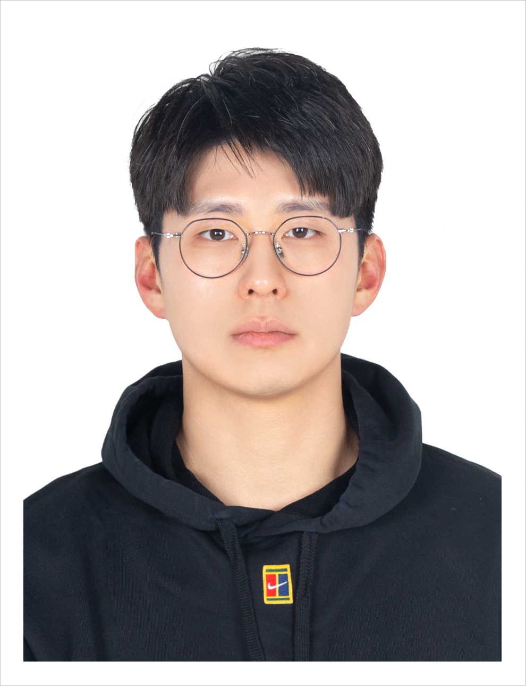

|
Jeonghun Park
|
 |
Jeonghun Park, Ph.D.
Assistant Professor
Yonsei University
School of Electrical and Electronic Engineering
Seoul, Republic of Korea
Office: C532 (3rd engineering building)
Email: jhpark AT yonsei DOT ac DOT kr
[Google Scholar]
|
I am an assistant professor in
School of Electrical and Electronic Engineering
at
Yonsei University.
I am interested in a diverse range of topics within wireless communications, signal processing, sensing, and machine learning, covering both theoretical foundations and practical implementations. My work involves utilizing a variety of mathematical tools, including matrix theory, large-scale optimization, sampling, information and communication theory, digital signal processing, and stochastic geometry. My objective is to develop effective algorithms and analyze wireless systems, with a focus on enhancing efficiency.
Some of my current research topics are:
New MIMO for 6G and beyond
AI-native RAN – AI for wireless, wireless for AI
Satellite network analysis and design
Current service:
Previous service:
News
Events/Grants/Travel
Feb. 2026: Prof. Park has been appointed as an Editor of IEEE TWC.
Feb. 2026: Subin has received the Silver Prize at the Samsung Humantech Paper Award. Congrats to Subin! [News]
Dec. 2025: Seyong has received the Grand Prize of the Outstanding Graduate Student Award from the School of Electrical and Electronic Engineering at Yonsei University.
Congrats to Seyong!
Dec. 2025: Yonsei university hosted AI-RAN summit. [News]
Nov. 2025: Prof. Park presented research work on space-time beamforming for satellite communications at Samsung annual forum 2025. [Link] [News]
Oct. 2025: We presented three papers at the Asilomar Conference on Signals, Systems, and Computers 2025. Contrats to Subin, Chaehyun, and TaeJun on their first conference presentations! [Link]
Papers
Openings
Appointments
Assistant Professor, School of Electrical and Electronic Engineering, Yonsei University,
Mar. 2023 - Present.
Assistant Professor, School of Electronic Engineering, Kyungpook National University,
Feb. 2019 - Feb. 2023.
Senior Engineer, Wireless R&D, Qualcomm (San Diego),
Sep. 2017 - Feb. 2019.
Ph.D. in Electrical and Computer Engineering, University of Texas at Austin,
Sep. 2013 - Dec. 2017.
M.S. in Electrical and Electronic Engineering, Yonsei University,
Mar. 2010 - Feb. 2012.
B.S. in Electrical and Electronic Engineering, Yonsei University,
Mar. 2006 - Feb. 2010.
|